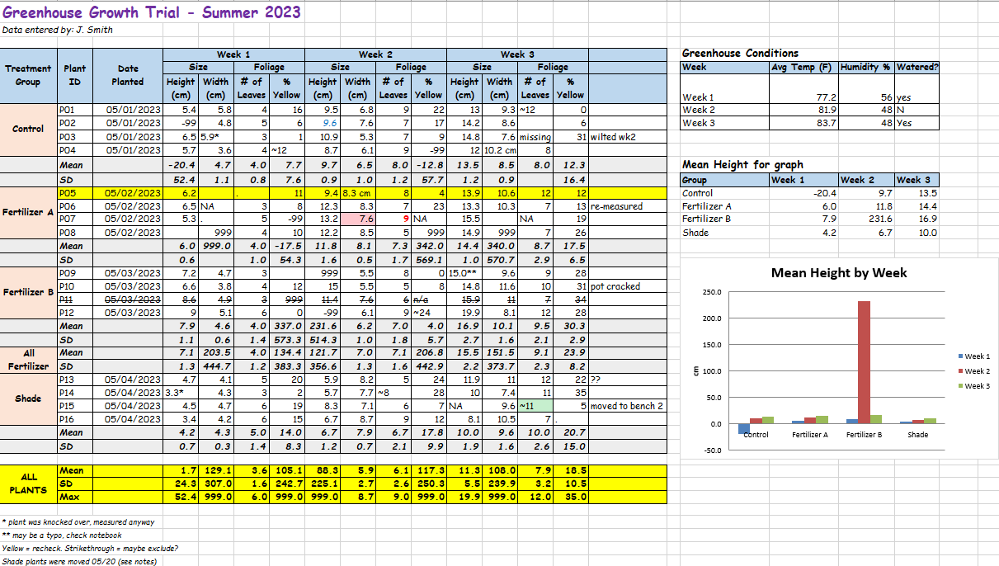
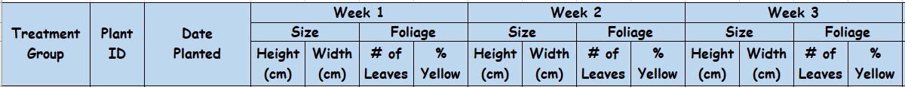
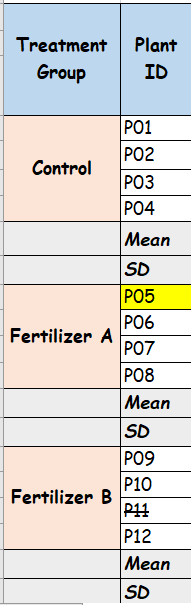
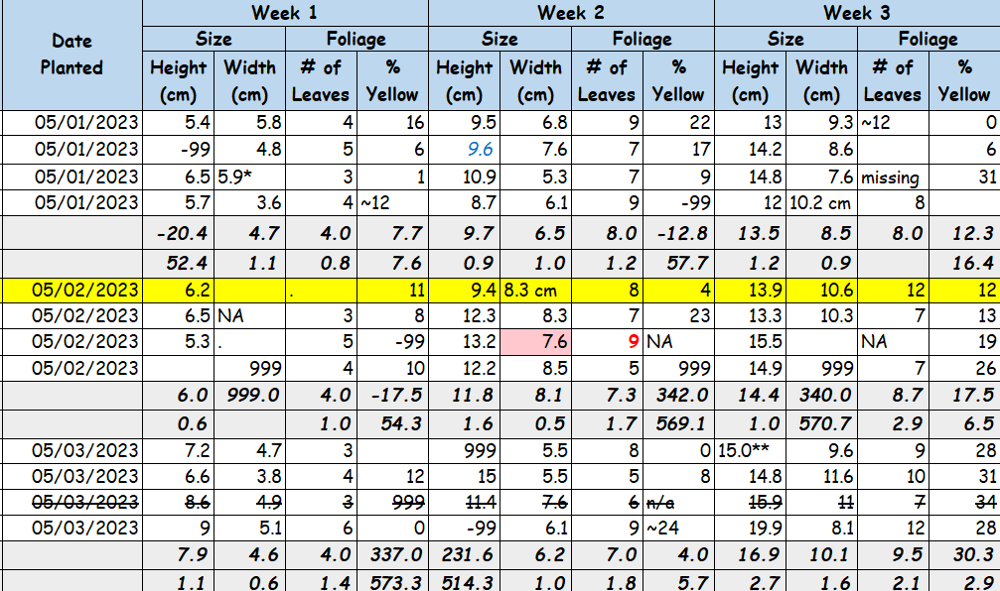

| group | n |
|---|---|
| All Treatments | 60 |
| Treated | 40 |
| Treatment A | 20 |
| Treatment B | 20 |
| Control | 20 |
| Males | 30 |
| Females | 30 |
Many issues happen before your data gets into R; they start with your data. Sorry if you were expecting an R post, but this will be purely a data rant.
If your data looks like this, please pay close attention.

I’ve met people who genuinely think data sheets like this look good, and I’ve received enough datasheets from others that look like this that they must think this is a decent way to store their data.
I saw this a lot in academic research and, unfortunately, I still see this today in the professional world.
So what exactly are the problems with this dataset?
The data in the image is fake, but the issues are all things I have seen in real datasets. They range from genuine problems to just really odd things to do to your data in an academic, research, or professional setting.
Structural Issues
Non-Tidy Data
This is probably the most common issue, and it makes several other issues easier to introduce.
I’m not going to go into what tidy data looks like because others have already done that for me. Here is the walkthrough from the pros: Tidy data
There are several other names for tidy data (e.g., long), but they all mean a similar thing: each observation or sample gets its own row. How you define a sample may differ depending on the study design, but it will generally be a similar structure, or a simple pivot away.
There are exceptions such as multivariate analysis, but tidy data usually makes reading in, cleaning, and analyzing your data easier.
So in the example, we have non-tidy, wide data where there are multiple samples per row because there are distinct weeks as columns. These should be pivoted down into a “Week” column.

Merged Cells
Merged cells cause issues when you read the table into any software to perform the actual analysis.
Merged cells could be merged headers across columns, which are often a symptom of non-tidy data, or merged rows, which are typically used to show rows belong to the same group.

The fix is to make your data tidy and fill your rows in so each record can stand alone.
Multiple Tables on a Single Sheet
This comes in various forms. As shown in the example at the top, there could be multiple tables that have different structures, or the main data could be split into separate tables by other content, such as descriptive statistics in this case.
Usually, the distinct tables are data that are meant to be merged onto the main data, but due to non-tidy data structures, they cannot be added to those main tables.
This is not a huge issue, but when you have to read each rectangle of data separately, then combine them, it gets cumbersome.
Unnecessary Information
This might be controversial, but you do not need your descriptive statistics in your actual data. The number of times I see this and have to strip it out to get the actual data is aggravating. Perform your analysis outside your dataset! You are going to read it into a program to do your analysis, so calculate your descriptive statistics there.
As noted above, if you keep these in when you read your data into R, you have to remove them, or read in different sections of the table without them and combine.
Missing or Excess Information
All data needs to be in a column. Each column should also include a variable name to give it some context. Having floating values out to the right is not helpful because no one knows what they mean.
Having floating information in headers or footers that is important or adds details to records should be added as columns in the dataset if that information is crucial. If you need to make flag or comment columns to hold that information, do it. Footnotes with symbols in cells will also change any numeric data to character, which then would have to be cleaned and turned back into a number. Therefore, that asterisk or other mark is going to be removed from that cell anyway.
Lack of Structural Hierarchy
This one is a bit more rare.
Occasionally, I’ve gotten data that clearly has a hierarchy based on some grouping variable, but all the levels of that hierarchy are stored in the same column. For example, in the table below, we can see that there is an “All Treatments” group. The next row notes how many were treated. Then the next 3 rows break that down into the specific treatments. Finally, they are split by sex. There is a clear hierarchy, but everything has the same structure.
Here is how I would store it. The treatment has its own column. If we really need to be able to easily figure out what groups the treated groups are there can be a treated flag. Sex has its own column. Finally, we have the counts. With this structure, I can easily get the counts for any category or subcategory.
| treatment | treated | sex | n |
|---|---|---|---|
| A | TRUE | M | 10 |
| A | TRUE | F | 10 |
| B | TRUE | M | 10 |
| B | TRUE | F | 10 |
| Control | FALSE | M | 10 |
| Control | FALSE | F | 10 |
Formatting Issues
There are some common formatting choices that should be avoided.

- Mix of data type, such as having numeric and character values in the same column. This is often caused by putting descriptions (e.g., <0.05 or BLQ) in a numeric column. Only use one data type per column.
- Multiple sentinel values. For those who are not aware, sentinel values are those that represent some signal. Usually, this refers to NA or missing values. You should be consistent in using a single value in your dataset whether that is empty cells, NA, N/A, etc.
- Cell or text formatting. No highlight or fill, text color, bold/italics, strike-through, etc. Is the presence of this formatting meaningful or not? Is that one cell with yellow highlighting important? Who knows? Maybe you do, if it is your data, but how about in a year? If it is important, add a dedicated column and a comment or flag.
- Multi-line headers. The headers in the example above are not just wrapped but contain new-line characters. When read into software, those new-line characters are retained.
- Dates in Excel. You cannot avoid putting dates in Excel, but I think, at this point, everyone has had issues with dates in Excel. Those issues persist when you read them into R. My recommendation is to make sure the cell format in Excel is set to “Text”. This way, it can be read as text and converted in R to an actual date. If you already have your dates in Excel and try to convert them to Text, it will mess them all up. Copy the column to something like Notepad, change the format to Text in Excel, then paste the values back.
Off the Wall
This is just a list of the absolute off-the-wall things I’ve seen in Excel sheets.
- Images of tables rather than the actual data.
- Values with strike-through formatting. What does that mean? Is the data wrong? Should the value/row be excluded? Honestly insane.
- Comic Sans. Maybe it is my millennial side showing, but we had it drilled into us that it is the most unprofessional font in existence.
Conclusion
This probably came off as a mild rant, but these are some basic principles everyone who works with data should know.
If your data looks like this and you are the one doing the analysis, you are wasting your time having to get it into something usable rather than just formatting it analysis-ready from the start. If you are sending this to someone else to do the analysis, you risk losing important information, failing to communicate it, or wasting money if you are paying for the analysis.
I see these far too often, so I’m hoping this helps someone make others’ data jobs easier.